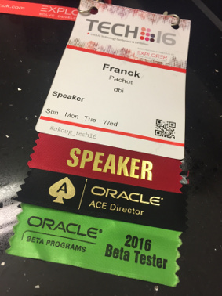

This was first published on https://www.dbi-services.com/blog/multitenant-internals-summary/ (2016-12-05)
Republishing here for new followers. The content is related to the versions available at the publication date.
.
Today at UKOUG TECH16 conference I’m presenting the internals of the new multitenant architecture: 12c Multitenant: Not a Revolution, Just an Evolution. My goal is to show how it works, that metadata links and object links are not blind magic.
Here are the links to the blog posts I’ve published about multitenant internals.

If you are in Birmingham, I’m speaking on Monday and Wednesday.